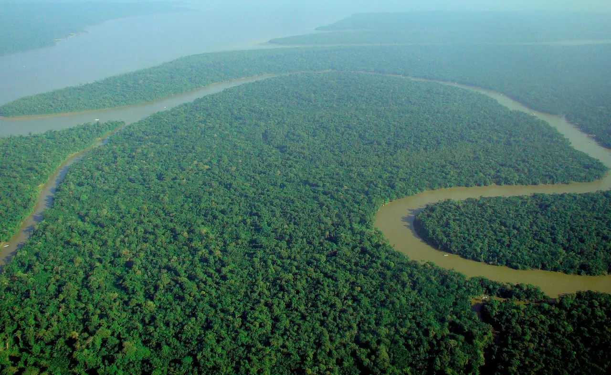

Nincs kiválasztott régió
Itt jelennek meg a kiválasztott esőerdő adatai: hol található, mekkora, milyen élőlények élnek ott, és mi fenyegeti.
Az Amazonastól Borneóig: válassz egy régiót, és megtudod, hol található, mekkora, kik élnek ott és mi fenyegeti.

A trópusi esőerdők többsége az Egyenlítő két oldalán, a Ráktérítő és a Baktérítő között húzódik, ahol egész évben meleg van, és szinte minden nap esik az eső. A három legnagyobb összefüggő terület Dél-Amerikában, Közép-Afrikában, valamint Délkelet-Ázsiában és Új-Guineán található.
Esőerdők azonban hűvösebb vidékeken is nőnek. A mérsékelt övi esőerdők például Észak-Amerika nyugati partján és Chile déli részén alakultak ki, ahol a tenger felől érkező párás levegő bőséges csapadékot hoz.
Válassz egy régiót a listából, vagy kattints egy jelölőre a térképen. A szűrővel külön is megnézheted a trópusi és a mérsékelt övi esőerdőket.
Itt jelennek meg a kiválasztott esőerdő adatai: hol található, mekkora, milyen élőlények élnek ott, és mi fenyegeti.
Az Amazonas-esőerdő kb. 5,5 millió km²-es: majdnem hatvanszor akkora, mint Magyarország, és kilenc ország osztozik rajta.
A kanadai Great Bear-esőerdőben óriás tuják nőnek, és itt él a ritka, fehér bundájú „szellemmedve” is.
Az ausztráliai Daintree-esőerdőt a világ egyik legősibb trópusi erdejének tartják: a becslések szerint mintegy 180 millió éves.
14 esőerdei állat és növény képpel és leírással; öt állat hangját meg is hallgathatod.
Tovább az Élővilághoz